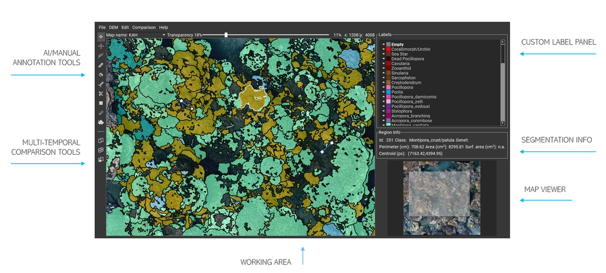

TagLab Documentation
Interface
The toolbar on the left side of the interface contains individual operation buttons that can be activated individually:
- Pan\Zoom enables only pan/zoom operations, turning off all other tools.
- Place annotation point allows you to place points to annotate manually.
- 4-clicks segmentation is an AI-based interactive tool that enables users to trace region boundaries using four endpoints. For a demonstration, refer to the video tutorial on the Home page.
- Positive-Negative Clicks Segmentation is an AI-based interactive segmentation tool that enables users to trace region boundaries using both external and internal points. Users can also use it to edit previously segmented areas. For a demonstration, refer to the video tutorials on the home page.
- Freehand Segmentation freehand segmentation of regions using a pixel-wise drawing tool.
- Watershed Segmentation tool freehand segmentation of regions using scribbles.
- Sam - all regions in an area is an AI-based interactive segmentation tool that simultaneously segments all non-overlapping regions in a sub-workspace.
- Sam - positive/negative in an area is an AI-based interactive segmentation tool that allows interactive segmentation of a region using external and internal points (similar to Positive-negative clicks segmentation) on a sub-workspace. Compared to positive-negative clicks, once a sub-workspace is defined, the process is faster and sometimes more robust to noise, although less accurate in tracing region boundaries.
- Assign class is a tool for the class assignment (select +
A ). - Edit region border this tools permit to edit contour quickly.
- Cut segmentation is a tool to separate regions drawing curves.
- Measure tool takes linear measures, between a pair of points or objects centroids.
- Fully automatic semantic segmentation allows to select a pre-trained semantic segmentation network from the ones available, and apply it new data.
- Split screen splits the working view in two sincronized views.
- Compute automatic matches computes automatic correspondences between semantically segmented regions displaying them on a table.
- Add manual matches allows the manual editing of correspondences.
The Working View displays the image data to annotate. Navigation is straightforward: zoom (wheel to zoom in and out) is always allowed, panning is enabled only when the Move tool is active or by pressing the
On the right side, the Labels Panel contains your custom list of colours and class names; you can configure labels by editing the dictionary available in the .config file in your TagLab folder. The Eye icon controls the visibility of each class which be switched singularly or in groups (by pressing
The Region Info box shows properties related to the selected object as id, genet, coordinates, class, perimeter, area, and surface area. This information is updated by double-clicking the object.
The Map Viewer, on the bottom right of the interface, highlights the map region under viewing in the Working View, assisting the navigation of extensive maps. The Map Viewer is interactive, too; the working area can be selected by a single click or by panning on the rectangle of interest.
Create and manage a project
File > Add New Map
Choose a name and browse data from your PC. Be careful:
- TagLab only supports .jpg and .png RGB images with a maximum size of 32767x32767 pixels.
- TagLab doesn't support images having a transparency channel.
- The loading of a .tiff file with the DEM is not mandatory.
Please, fill all the fields in the Map Settings menu. TagLab will use the Acquisition Date for the multi-temporal comparison, the Pixel Size to convert pixels regions in cm2 and lengths in cm. By clicking apply, you create a new TagLab map. If TagLab crashes after the data loading, the image format is probably not supported. In TagLab, a map is a data layer containing the ortho, the DEM (if existing), related info and your region-based annotations. TagLab supports the creation of multiple maps for multi-temporal comparison. You can select visualized maps through the Map Name field on the top of the Working View.
File > Edit Map Info
You can edit the Map Setting fields of all your TagLab maps in a further moment by using the Edit Map Info. However, you are not allowed to change the ortho.
File > Save Project
It saves the current project. The project file contains one or a set of TagLab maps. References to the loaded map, the settings, and to annotations (as a list of coordinates and assigned classes) are saved in a JSON file.
File > Open Project
It allows loading an existing project. If the image data has been moved into another folder, Taglab asks you to re-locate and load them again. The project file can be moved anywhere. Recents open projects are directly visible in the File menu.
Digital Heritage/Ecology
TagLab has been tested in two application fields: underwater survey mapping on coral reefs, and the analysis of orthomosaics in Digital Heritage applications. Most of the tools and the menu options for the two application fields are the same, but there are some slight differences. By navigating to File > Settings, the user can switch between the two research fields and access the respective functionalities.
Import options
File > Import Options> Import Label Image.
This option allows you to poligonize a co-registered label image and load the polygons as annotations superimposed on your ortho. The label image must have a black RGB(0,0,0) background, and the foreground classes must be present in your .config file. It may be useful to use Taglab edit tools on a previous segmentation.
File > Import Options> Add Another Project.
Append a project (one or a set of TagLab maps) to the current one.
Export Options
File > Export Options > Annotation as Data Table
Saves a .csv file containg a unique id, genet, class information, area, perimeter, centroids coordinates for each polygon.
File > Export Options > Annotations as Label Image
Saves a .png pixel-wise segmented image with a black background and colored foreground classes according to the visible classes in your label panel. Class visibility might be switch on and off using the Eye icon.
File > Export Options > Export Annotations as a GeoTiff
Exports a geo-referenced labelled image.
File > Export Options > Annotations as Shapefile
Exports visible annotations as a geo-referenced shapefile.
File > Export Options > Histogram
Creates a histogram containing all the foreground classes checked in the menu. It automatically display per-class coverage.
File > Export Options > Training Dataset
Export squared tiles of 1026 pixels with an overlap of 50%. TagLab exports each RGB map tile and the corresponding label with the same suffix. For more information, please refers to Learning pipeline.
Commands
Undo and Redo operations work with
Select
Operations can only be applied on selected labels. For the single label selection, double click inside a label; the polygon outline changes from black to white.
Almost all operations work with a single selected label, except delete, boolean operations (merge, divide, subtract), assign class, that allows multiple selections. Labels can be added to the selection using
Confirm operation
To carry out an operation, select a tool, select a polygon if required by the process, perform edits, and then press
Reset tool
Any operation can be reset by pressing
Tools
The zoom is always active; all tools are activable singularly. In most tools, the tracing/editing actions must be confirmed by pressing the
Pan/Zoom
Panning is always enabled using left-click and drag, regardless of the selected tool. However, when the Move tool is active, all other tools are disabled. Pan and zoom operations in the Working Area are synchronized with the Map, and the currently framed Working Area is highlighted. You can use the interactive viewer to navigate through large orthophotos.
Assign
When the assign (bucket icon) tool is active, all the clicked polygons assumes the class name and the correspondig color values of the selected class in the labels panel. Multiple selection is allowed by pressing
Freehand segmentation
When the Freehand segmentation is active, users can draw a pixel-wise curve of a fixed thickness of 1px. The curve doesn't need to be drawn continuously but can be drawn in different overlapping segments. The operation is applied by pressing
Edit border
When this tool is selected, the user can arbitrary draw curves on a single selected polygon. Areas included or excluded from the edit curves are automatically added or removed from the selected polygon. Information in the info panel is automatically updated. If no polygon is selected or multiple polygons are selected, the edit operation cannot be applied; select a single area and press
Curves don't need to continue and can be concave or convex. Curves must cross the polygon outline at least twiceto be effective; otherwise, they will automatically remove them. You can edit any inner contours following the same criterion. The snapping option is always active, and the resulting polygon is cleaned from unwanted scratches.By pressing
Cut segmentation
This tool works exactly like the Edit border tool except that the regions subtended by the edit curves are not removed but separated from the current polygon.
After confirmation (
Create crack
The Create crack tool is useful to create empty cracks inside a polygon quickly. When the tool is active, clicking on a point inside a crack opens the Crack window. The window has a slider that allows adjusting the selected area. The result of the selection is visible through the preview (which is zoomable). The operation is confirmed by pressing the Apply button..
Measure tool
The Measure tool can measure the distance (express in cm if the pixel size is known) between two points or the distance between polygons' centroids. In this last case, the user has to select two polygons, and the tool will snap the measure to the centroids.
4-clicks segmentation
This tool implements a CNN for the interactive tracing of object boundaries. The user, helped by the cross cursor, places four points at the object's extremes (extreme top, extreme bottom, extreme left, extreme right). There is no need to follow a specific order, but it's necessary to position them as accurately as possible near the extremes. After placing the fourth point, the contours of the object are automatically delimited through a neural network called Deep Extreme Cut. This tool works only if you have the network's weights properly placed in TagLab's models folder.
Positive/negative clicks segmentation
This tool implements a CNN for the interactive tracing of object boundaries. To use this tool efficiently, the user must zoom in on the object to be segmented, framing it completely, pressing the
Fully automatic segmentation
This tool classify pixels using an optimization of the fully automatic semantic segmentation network DeepLab V3+ . For a detailed explaination about its usage, please refers to Create custom classifier.
Alignment tool
TagLab offers a manual alignment tool (which can be used before or after the annotation pipeline) that utilizes hand-placed markers.
To align two orthomosaics, open Project > Alignment tool. The orthomosaic on the left serves as a reference; a new map (orthomosaic + DEM annotations), co-registered to the reference, will be created after aligning. There are two types of markers: hard and soft. The hard markers have been designed to be placed on stable, anchored objects that have not changed during the time points, such as ground control points. Hard markers carry more weight in the final roto-translation calculation. Scale adjustments are not permitted.
Markers are placed with the left mouse button+shift, and by default, they are soft constraints denoted with a yellow cross; if they are clicked twice, they become hard and red-colored. If a marker is misplaced, it can be selected and moved (dragging it) or deleted.
When the fourth marker is placed, a first rototranslation is estimated, and the relative error (in pixels) is displayed next to each marker (to display the error, you need to zoom in on it).
The point should be in positioned on the corresponding location, the order identifies the point id. If the points are not corresponding the estimation fails and None appears. Please ensure that markers are placed in corresponding positions across views. If you see the word "None" at the points instead of the pixel error, markers are not placed in the correct order. As shown in figures below, it is advisable to position more than 4 markers evenly across the orthomosaic. You can use the Preview to observe the overlapping orthoimage and check the error for each marker. If needed, you can disable the markers with the highest error to minimize the overall error (Mean Dist).
NOTE: The new coregistered map is aligned by padding each map layer. To avoid problems with the image size limit, it is recommended that excess background around the orthomosaic be removed before to co-register the orthoimages.

Align tool

Alignment preview
SAM (Segment Everything) - Segments ALL and positive/negative clicks
Both tools utilize a deep learning architecture with many parameters, requiring a GPU with a minimum of 8 GB of RAM. These tools have not been optimized to work on complex shapes, such as corals, unlike other interactive AI tools of TagLab.
The use of SAM - Segment ALL requires two inputs in two different steps. First, the user will choose a square window with a size ranging from 512 to 2048 pixels. This window will be used to segment all the instances that are completely contained within it (objects crossing the window's edge will not be considered). The user can adjust the window size using the scroll, and once it is correctly positioned, they can confirm the choice by pressing the space bar.
Secondly, a grid of seeds will be displayed, and the user can adjust the number of seeds using the scroll based on the number of instances to be segmented. After adjusting the number of seeds, the user can confirm the operation by pressing the space bar.
SAM positive/negative clicks tool follows the same interaction paradigm as the positive/negative clicks tool, except for the placement of the square window at the beginning. Once the window is placed (as done in the first step of SAM- Segment ALL), the user can segment all the objects inside by placing positive and negative clicks. Press the Spacebar to confirm the object segmentation; to exit the tool, press ESC. Since both tools extract image features for segmentation when the window is positioned, and the feature extraction is the most computationally intensive part of the process, it is suggested that the tool be exited until the segmentation work for the entire area is finished.
Compared with the positive/negative clicks tool, the single instance segmentation is faster and sometimes more robust to noise. However, this tool has not been fine-tuned for working with complex shapes, and sometimes, the Positive/negative clicks tool still performs better. Editing existing objects is currently not possible using the SAM positive/negative.
Watershed segmentation tool
This tool uses the watershed algorithm to segment objects and allows users to perform interactive image segmentation using scribbles. The tool is not content-aware and is best for segmenting large areas with non-uniform textures.
First, the user should select a class and draw (positive) scribbles inside the target objects by holding Shift and clicking the left mouse button. This process can be repeated by changing classes and drawing more scribbles inside other objects of interest. Next, the user should draw negative scribbles outside the working area, where the positive scribbles are located, by holding Shift and clicking the right mouse button. These scribbles will serve as markers for the segmentation algorithm.
After defining the inside and outside areas, press spacebar to segment the image. The algorithm snaps region boundaries without overlaps and excludes regions that existed before the operation.
To adjust the size of the scribble brush, the user can hold down Shift and use the mouse wheel.

Watershed tool. On the left the input scribbles, on the right, the resulting segmentation.
Regions Operations
- Assign
A This shortcut assigns the selected class to the selected polygon/polygons.- Fill
F By pressing F with a selected polygon, inner holes are filled.- Delete
Canc Remove selected polygon/polygons.- Merge
M This tool creates a single polygon from selected overlapping polygons.- Divide
D This tool separate two overlapping polygons creating a two non-overlapping boundaries according two the selection order. The contour of the first prevails over the second.- Subtract
S This takes two selected polygons and remove the second from the first according to the selection order. When the second region lies inside the first, it creates a hole.- Refine
R By pressing R on a selected polygon, the tool will adjust contours according to the image gradient. The Refine tool implements a variant of the Graph-Cut algorithm to significantly improve the objects' contours accuracy without straying too far from the existing ones.
Annotation points
Annotation points can be manually placed with the Place Annotation Point tool or sampled on the ortho mosaics from Points > Sample Points On This Map. Once created, the points maintain the regions' annotation and visualization paradigm.
The Layers panel displays all the plots within the project; each plot has its own Annotations layer, which contains annotations for Regions and Points in two separate sublayers. Each point annotation has a unique id, and its properties are visible from the Info and Attributes panel. The Data Table panel, synchronized (and navigable) with the Main View, shows an overview of the annotations. The class can be assigned from the Labels panel, which interactively counts the points labeled per class. The annotation process in TagLab is made easier through the synchronized navigation of both the main view and data tables, equipped with a sort-and-search mechanism. When users click on a row, they can zoom in for a closer look at a specific point, and vice versa; clicking on any point will highlight its associated information in the table, allowing for easy access to all relevant data.
Taglab’s sampling strategies are designed to improve the flexibility of analysis on large-area imaging. Points are sampled in Sampling Areas. The sampling might follow different methods: uniformly, randomly, or stratified. We refer to Random Sampling, when the points are sampled randomly in a Sampling Area, to Uniform Grid Sampling, when they are assigned to the centers of a regular grid with a constant step defined according to the number of points required in the given area, and to Stratified Random Sampling when a random point is sampled for each cell of the same grid. A Sampling Area can be manually placed or sampled inside a TagLab’s Working Area. The Working area is primarily used when only a part of the orthoimage is being annotated, as the statistics and the import/export functionalities are restricted to it. Additionally, multiple Sampling Areas can be defined along a transect: these can be equally spaced along it or positioned randomly without overlap. The transect is assumed to follow a straight line on the orthoimage; the user needs to specify its start and endpoints. As well as Regions, annotated points can be exported from Export> Export Annotation as Data Table.
Only in the Ecology application, the Points menu contains specific items for TagLab interoperability with other specialized platforms for coral analysis, such as CoralNet and Viscore. For the use of these features, the user is referred to reading the conference paper.
How To
Learning pipeline
TagLab supports you in creating automatic classifiers optimized on your labelled data, automating your annotation and analysis pipeline. Custom models can be saved and later used to classify new data (using the Fully automatic segmentation tool).
How to export a training dataset
From the File > Export > Export New Training Dataset opens the following window:

Export Dataset Settings
During the export, orthos are cropped into tiles (small sub-images) matching the network input size and partitioned into training, validation tiles, and test tiles. In deep learning, training tiles are used in network weights optimization (actual learning), validation tiles to select the most performing network (weights combination), and the test tiles to evaluate the new classifier's performance. The majority of the tiles, about 75%, are dedicated to learning, 15% to validation and the remaining 15% to testing. This introduction helps you to understand the exporting settings (see figure below).
Please note, each different label colour is considered as a different class; if you need to exclude some classes from the training, you need to export the dataset disabling the class's visibility using the eye icon.
Dataset folder: folder where you will save the dataset; training, validation, and test tiles are stored in sub-folders.
Working area: part of the orthoimage used to create the dataset (visualized with a purple dashed rectangle). By default, the working area is the entire orthoimage, but you can frame a portion by clicking the button on the right and drawing a rectangle on the orthoimage. Be sure to include in the working area only totally labelled data, avoiding non labelled objects belonging to some minority classes.
Dataset split: Training, validation, and test tiles are extracted by subdividing the working area; they represent 75%, 15%, and 15% of the ortho, respectively. The partition can be Uniform vertical (from top to bottom), Uniform horizontal (from left two right), Random (randomly sampled areas), or Ecological-inspired. This last option has been designed for researchers working in marine ecology. Training, validation, and test areas are chosen according to some landscape ecological metrics scores, so they are all equally representative of the species distribution. Regardless of the partition, tiles are generated by clipping the sub-areas in scan order. The figure below shows the sub-area partition and clipped tiles, according to the different Dataset Split options.
Target scale: orthos and labels are rescaled to a common scale factor before the tiles export. This is useful to create a dataset from a set of ortho mosaics having severe differences in pixel size. If you want to create a dataset from more than one annotated ortho, you have to export tiles in the same folder; the scale factor helps you choose an average pixel size and uniform your data.
Oversampling: when this option is checked, the export tries to balance the classes by sampling a higher number of tiles from rare objects.
Show exported tiles: save in the Taglab’s directory an image called tiles.png showing the scheme (figure below) of exported tiles.

(a) Uniform (horizontal)

(b) Uniform (vertical)

(c) Random

(d) Ecological-inspired
Training tiles (green), Validation tiles (blue), and test tiles (red). (a) Uniform vertical split. (b) Uniform horizontal split. (c) Random split. (d) Ecological-inspired split.
How to train your network
When the dataset is ready, you can create your custom classifier from File > Train Your Network . This feature creates the new classifier by optimizing a DeepLab V3+ on your data.

Train Your Network Settings
- Dataset folder:
- indicate your dataset’s folder.
- Network name:
- choose a name for the new classifier.
- Number of epochs:
- a typical number is between 50 and 80; the higher this value, the longer the time required for training.
- Learning rate:
- this parameter should be changed only if you have some machine learning knowledge. The default value is chosen to work well in many different application cases.
- L2 regularization:
- this parameter should be changed only if you have some machine learning knowledge. The default value is chosen to work well in many different application cases.
- Batch size:
- higher is better; 4 is a reasonable choice. A number greater than 8 can cause memory issues even if you have a GPU with 8 GB of RAM.
At the end of the training, TagLab will display training metrics and graphs in the Training Results window. Indicatively, the more the accuracy and mIoU values get closer to 1, the higher is the quality of your classifier (values of mIoU around 0.8 can be considered good). To check the classification correctness, you can select a tile from the test dataset and see how the model has classified the pixels in the Prediction window. By confirming, the classifier is saved in the TagLab's models folder; it can be loaded using the Fully automatic segmentation tool.

Training Result Window
Pratical hints
- Larger training dataset outputs automatic models with better performance.
- A training session with a lot of data and a lot of epochs may need several hours.
Fully automatic segmentation
The Fully automatic segmentation tool allows you to select a classifier between the available ones and infer the semantic segmentation on a new ortho. Activating the tool opens the Select Classifier window, where the classifier can be selected through the combobox Classifier.

Select Classifier Window
Information like the number and the name of recognized classes (a.k.a number of colours in your training dataset) and the training scale factor are reported immediately below. The new ortho is rescaled at the training scale before the classification.
Before launching the classifier on the entire map, you can select a region of the ortho mosaic by clicking the  button and previewing the classification on the selected region by pressing the Preview button. The button Apply launches the automatic classification on the entire ortho mosaics; the progress bar illustrates the classification process's progress. During the classification, TagLab creates a temp folder in the TagLab directory containing all the classified tiles and an image, called labelmap.png, the average aggregation of all the scores on the entire ortho.
button and previewing the classification on the selected region by pressing the Preview button. The button Apply launches the automatic classification on the entire ortho mosaics; the progress bar illustrates the classification process's progress. During the classification, TagLab creates a temp folder in the TagLab directory containing all the classified tiles and an image, called labelmap.png, the average aggregation of all the scores on the entire ortho.
WARNING! When the automatic classification finishes, TagLab asks to save the project and re-open the tool. If you don’t save the project, you can re-open it and load the labelmap.png image from File > Import Label Image.
Digital elevation model (DEM)
Switch between RGB/DEM
If you have loaded a Digital elevation model (DEM), you can switch between the ortho and the DEM by pressing the key
Compute surface area using DEM information
DEM can be used to compute an approximation of each segmented region's surface area. This measure gives a better quantification of change between objects than the planar area.
The surface area is computed only on the ortho currently displayed on the Working Area. So, if your project contains more than one ortho, you need to launch the surface area computation for each one.
Clipping a DEM
The menu option DEM > Export Clipped Raster allows clipping a DEM using the segmented regions. The result, a geo-referenced raster object (.tiff file) containing only the depth information of the segmented regions, can be imported in GIS software to perform further DEM processing operations (such as the surface rugosity calculation of a specific class).
Multi-temporal comparison
TagLab allows loading co-registered orthos, reconstructed from temporally different surveys, and tracks the segmentations morphological changes. To facilitate the visual comparison, by clicking the Split screen button, maps (orthos and labels) are navigated through synchronized paired views. You can compare plots only in pairs; when your projects contain more than two labelled orthos, you can select the ones to compare using the Map Name menu on the top.

By selecting Comparison > Compute automatic matches, the correspondences between regions are automatically calculated, utilizing the overlap of regions.
Matches are displayed in a table in the Comparison panel and marked with a morphological action (growth, erode, born, died, split, fuse). Actions are assigned to corresponding matches by comparing either the planar or surface areas of the regions. You can make your selection from the "Search and Filter" menu under "Compare." The fields are editable; you can modify them by double-clicking. Additionally, using the "Filter" option, the user can display all regions associated with the respective actions for a quick overview.
The table is synchronized with both views. When a user selects a row, the corresponding match is highlighted in both views. Similarly, when a user selects a region, both the related row and the corresponding region(s) are highlighted in the other view and in the Comparison panel.
In Edit Matches mode, which can be accessed from the toolbar, users have the ability to edit matches. To delete a match, select one of the regions (all regions will become selected) and press the Delete key. This will remove one or more rows from the table. To add a match, select one or more regions in both views and press the space bar; this action will create one or more rows in the table.
Please be aware that any edits made after matches have been calculated may lead to inconsistencies. Therefore, we strongly advise that all maps be annotated before calculating matches and possibly refining them manually.
In order to assist users in identifying any inconsistencies, the rows involved in operations are highlighted in red. If a user selects these red-highlighted rows and reassigns the correspondences using the Edit Matches tool, the relation is confirmed, and the red coloring is removed. The table below illustrates the outcome of a match editing operation.
Each region is assigned a unique ID that corresponds to a specific time point, but its evolution across all time points can be reconstructed using 'genet' information. This 'genet' information connects all the connected regions from the available surveys through a second identification number that is common to all of them. This number can also be found in the Info and Attributes panel.
| Operation | What happens |
|---|---|
| Add a region | The new region is added and marked as born with respect to the previous time point and dead for the subsequent time point. |
| Edit region boundaries | If a region is edited and its area changes at a specific point in time, the area will be updated in the Comparison panel for both the previous and the following year. Additionally, if a region is assigned a new class, this information will be updated on all maps for all regions associated with it through the genet. |
| Delete a region | When a region is deleted, its row is removed from the Comparison panel. The connected regions are updated so that the previous one is marked as “dead,” and the subsequent ones as “born.” |
| Replace a region | If one or more regions are replaced—such as during a 'Region Cut' or 'Region Merge' operation—the affected rows will be deleted. Subsequently, all prior and subsequent regions will be reconnected based on their previous links (see Figure XXX). |
An important note, re-running Compute Manual Matches overwrites the table, so please, pay attention to do not lose your manual changes.
Finally, the information contained in the Comparison panel are exportable in a re-usable data format (CSV) form using Comparison > Export Matches